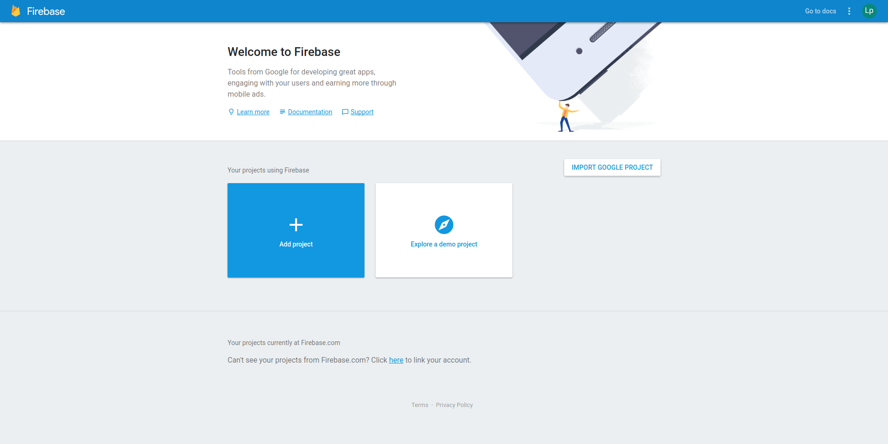
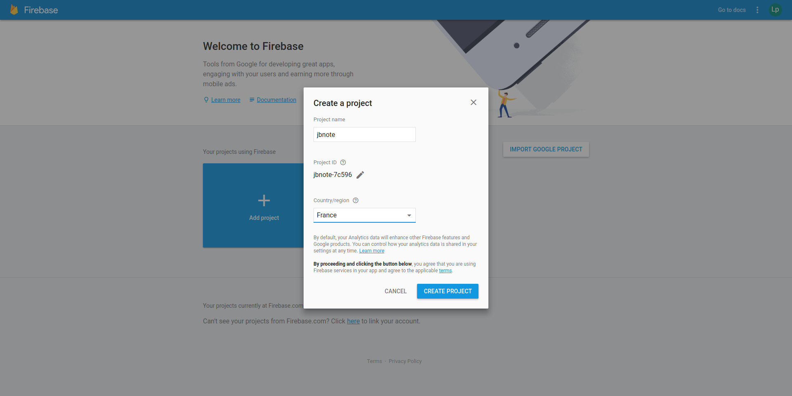
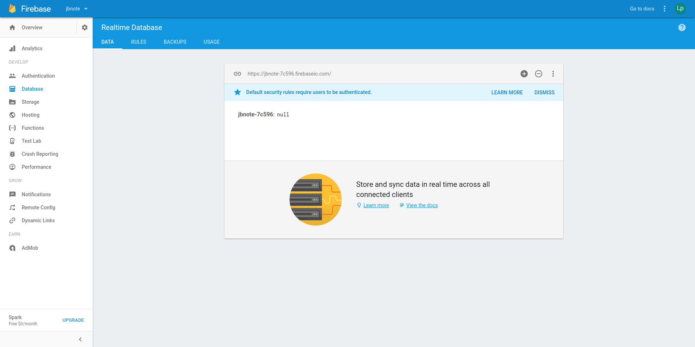
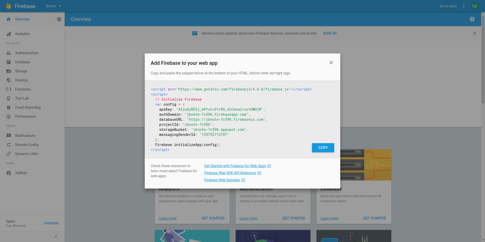
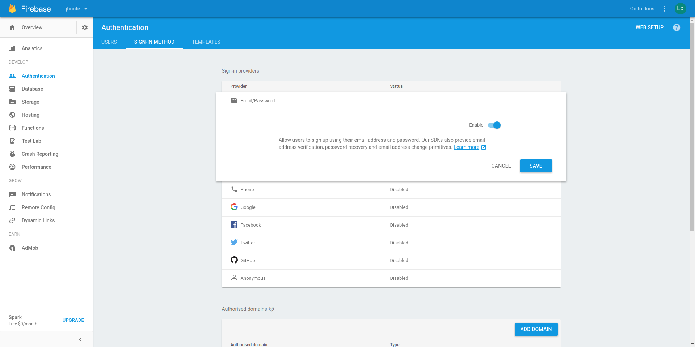
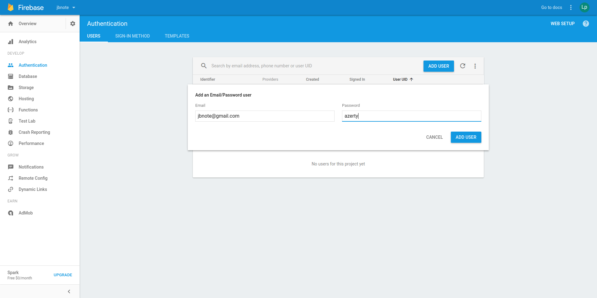

Go to https://console.firebase.google.com and click on Add project
Give a name to your project and select a country/region then click on the create project button
 Note that the project in these screenshots has been deleted since then so all keys and credentials don't exist anymore.Click on the Database entry in the left menu to initialize the default realtime database.
Then go back to Overview and click on Add Firebase to your web app.
Configure the jbnote app with the different items in the popup : apiKey, authDomain, databaseURL, projectId and storageBucket
Click on the Database entry in the left menu then click on the Rules tab. Here you can configure the security rules for your Firebase database. If you want to allow anonymous access, replace the default rules by :
Then click on Publish. If you chose this solution, uncheck Enable Firebase user auth in the jbnote app config form and save your configuration. You are finished and you will be redirected to the note app. If you want to enable auth, continue this help to the next step.
Click on the Authentication entry in the left menu then click on the Set up sign-in method button. In the list of all available sign-in providers, click on the Email/Password line then enable this provider and click on Save
 Note that you can enable additional authorised domain on this page. Be sure to enable the jbnote app domain tooGo back to the Authentication page and click on the Add user button. Set an Email and a Password for your user and create on Add user.
In the jbnote app, check the Enable Firebase user auth option and fill the Username and Password fields that appear with the credentials you have just created the Save the form.
When you save the configuration form, you are redirected to the part of the app that manage the note. You can come back to this install section anytime you want by clicking on the sync icon on the top right corner of the app.